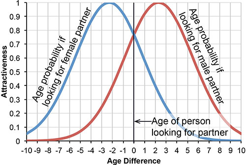

The demography module simulates for the following person events:
These events are simulated in random order (and household relocation and dwelling events are mixed into this random order of events). All demographic events are modeled using Markov models that apply transition probabilities to select whether events happen or not.
All probabilties are currently hold constant over time. It is planned to improve SILO by adjusting birth rates and life expectancy for future years.
Aging is the simplest event modeled. Every simulation period, all persons age by the length of the simulation period, which usually is one year.
The model checks for every woman if she is going to have a baby this simulation period. The probability for having a child is driven by two variables:
The birth rates were derived from the U.S. Department of Health and Human Services: National Vital Statistics Reports, Vol. 51, No. 12, August 4, 2003.
Women not living in a relationship with a man are assumed to have a birth rate that is 1/10th of the averge birth rate. As 42% of all women in the base year are married, the birth rate of married women is multiplied by [(1 - 0.58 * 0.1) / 0.42 = ] 2.243 to ensure an average birth rate (average for married and unmarried women) found in the statistics is matched.
Children aged 15 or older can leave the parental household. Data for the U.S. were not readily available, Canadian statistics were used instead (Statistics Canada). The bar chart on the right shows that probabilities to leave the parental household distinguish men and women, as women tend to leave their parent's household slightly earlier than men do. Canadian statistics only provided probabilities from children aged 15 to 35. Probabilities for children aged 35 to 49 were derived heuristically.
A child leaving the parental household immidiately searches for a new dwelling. In the unlikely event that no dwelling within a reasonable price range is availalbe, the child will stay with the parental household.
The probability to get married (shown in the figure on the right) is dependend on age and gender of a person. The model divides these probabilities by 2, as one marriage always affects the marriage status of two people. The model uses the observed probability to get married as the probability to either marry or cohabitate, which is likely to slightly underestimate the marriage/cohabitation rate. On the other hand, the model does not simulate a couple that is cohabitating already and decides to get married, as this would not induce a spatial move, and therefore, is irrelevant for the model. These two shortcomings are assumed to balance out, i.e. the marriage probability is assumed to reasonably represent the probability of a seperately living couple to move into one single dwelling, regardless of the legal status of their relationship. Data were obtained from the Census Bureau, where these data appear not be available anymore. The data are provided here in excel format.
Currently, the model only considers marriages/cohabitation between two people of the opposite gender. It is planned to expand the model to allow same-sex marriage/cohabitation.
At the beginning of every simulation period, the model checks for every person if this person is available for getting married. Only persons aged 15 to 79 who are currently unmarried are considered for getting married. To speed up the model, 20% of those available for getting married are added to a "wedding market," which ensures to provide a large enough number of potential wedding partners while keeping the wedding market rather small and efficient.
During the simulation, an unmarried person with the right age may decide to get married. This person will select a person of the opposite gender from the wedding market. Currently, only age is used as "utility" to choose a partner. It is planned to add income as another variable to find two partners who are likely to marry each other or cohabitate. Marriage statistics suggest that the average age difference between bright and groom is 2.3 years, with the man commonly being the older partner. A normal age distribution as shown on the right is assumed when selecting a partner. A 26-year old woman looking for a male partner will mostly likely select a man aged 28. It is possible that this woman selects a man ten years older than herself, though this is rather unlikely.
After getting married, both bride and groom are removed from the wedding market. They are removed from their previous households and form a new 2-person household. Should one of the partners come from a household where only children would remain, those children are added to the newly established household.
Every cohabitating couple may get seperated. Whether a couple is married or not and whether a married couple officially divorces or not is not of further interest for this model. Divorce probabilities are used to model every simulation period to analyze whether a cohabitating couple seperates and one partner moves into a different dwelling.
The graphic on the right shows the probability to get divorced subject to age and gender. Women have a higher divorce rate in younger years because more women than men of that age cohort are married. Data were obtained from the Census Bureau, where these data appear not be available anymore. The data are provided here in excel format.
A partner who seperates searches for a new dwelling. The income of the old household is split based on each person's income. If children (or any other household members) are present, they remain with the old household.
A small share of workers may lose their job, and unemployed persons may seek for an open job.
Death is modeled by applying survival rates by age and gender. Survival rates where obtained from the World Health Organization (WHO) for the United States in 2000, which is the common base year for SILO. Survival rates become smaller as people age, and are slighly higher for women than for men.

This module handles changes to the population except household relocation.